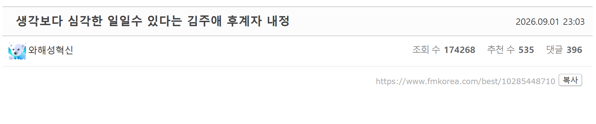
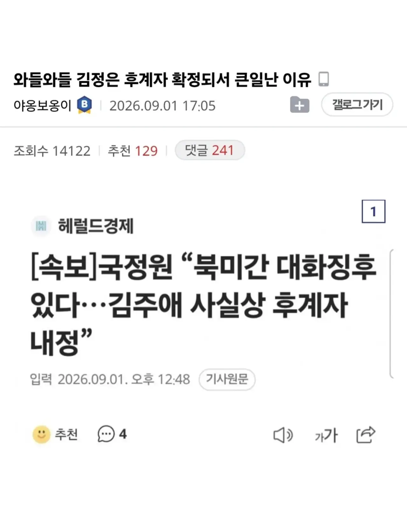
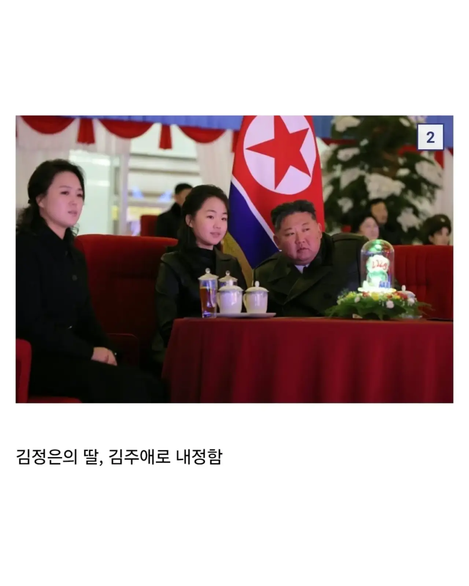
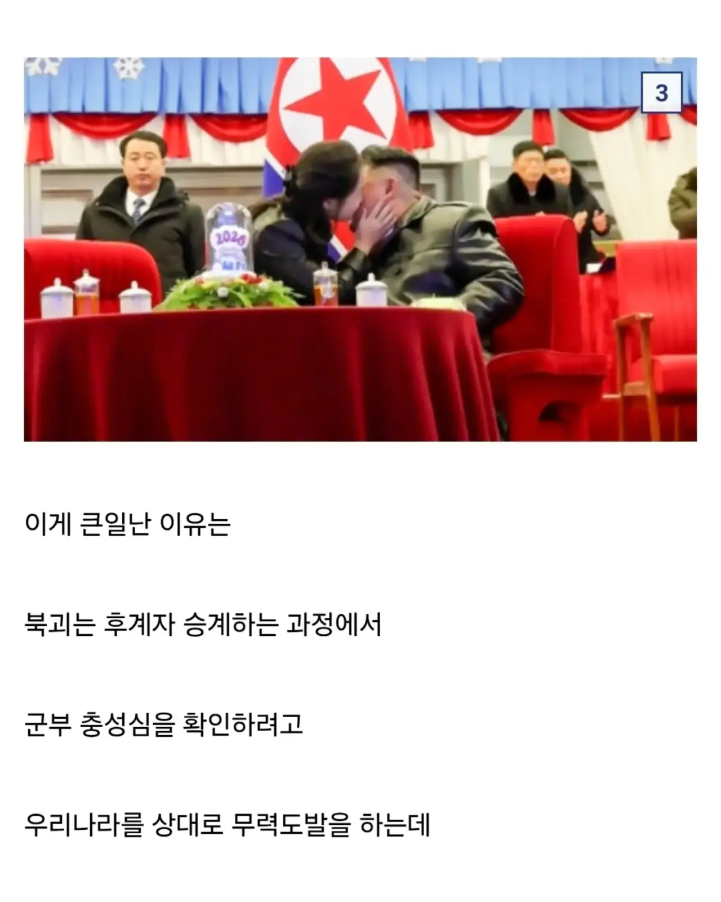
정권교체시 무력도발을 존나 한다면서
사건들을 하나하나 언급하며 선동하는데..
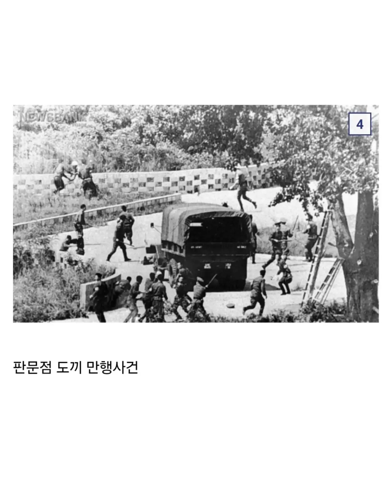
판문점 도끼 만행사건 (1976) — 김정일의 공식 후계자 지명(1980)보다 훨씬 이전이라, "후계 확정 과정" 도발과 관계 없음
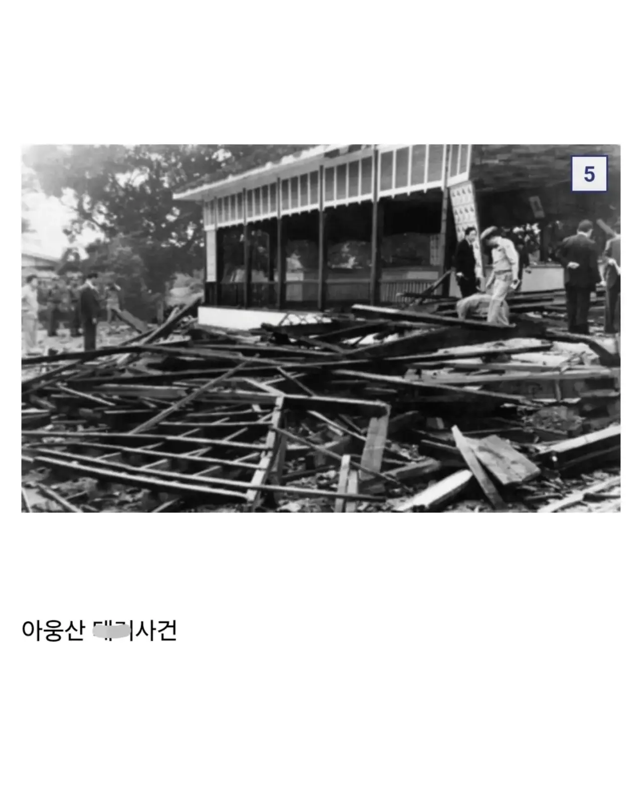
아웅산 테러사건 (1983) — 학술 논문(국제정치연구)에서
"김일성과 김정일의 대립으로 아웅산 사건이 일어났을 것으로 추론하기는 어렵다"고 이미 결론 내린 사건임
김정일은 이미 1980년에 공식 후계자로 확정된 상태였어서, "후계 확정 과정에서의 충성심 테스트"라는 프레임과는 시점도 안맞음
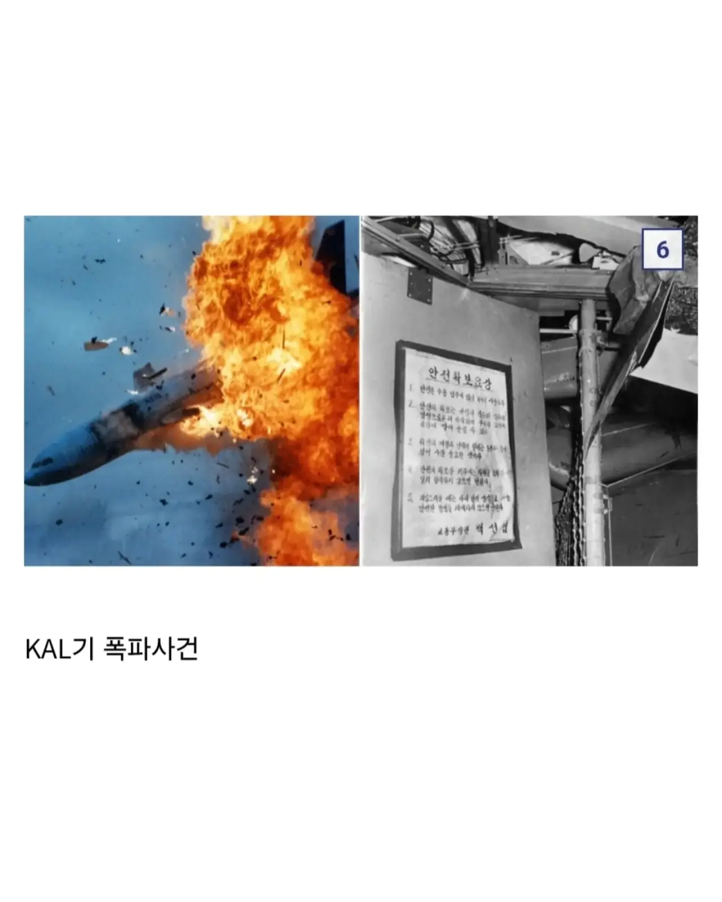
KAL기 폭파사건 (1987)
김정일이 후계자로 확정된 지 이미 7년이 지난 시점인데
뭔 개소리냐 진짜........
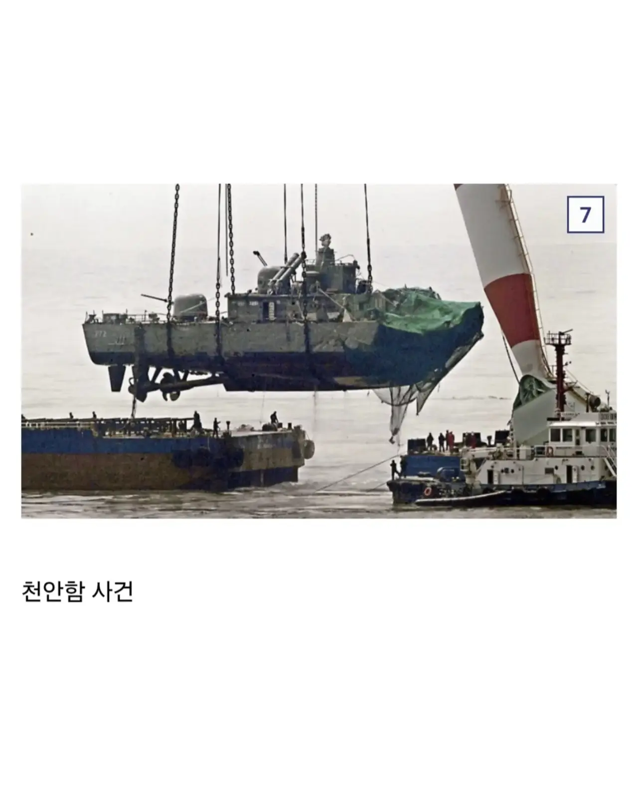
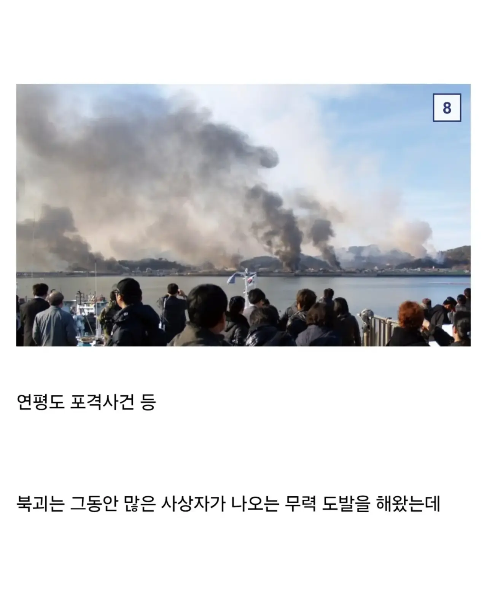
천안함 사건 (2010) + 연평도 포격사건 (2010) — 이 둘은 실제로 국내외 다수 분석에서 김정은 후계 구축과 관련있다고 분석하는 경우는 많음
그리고는
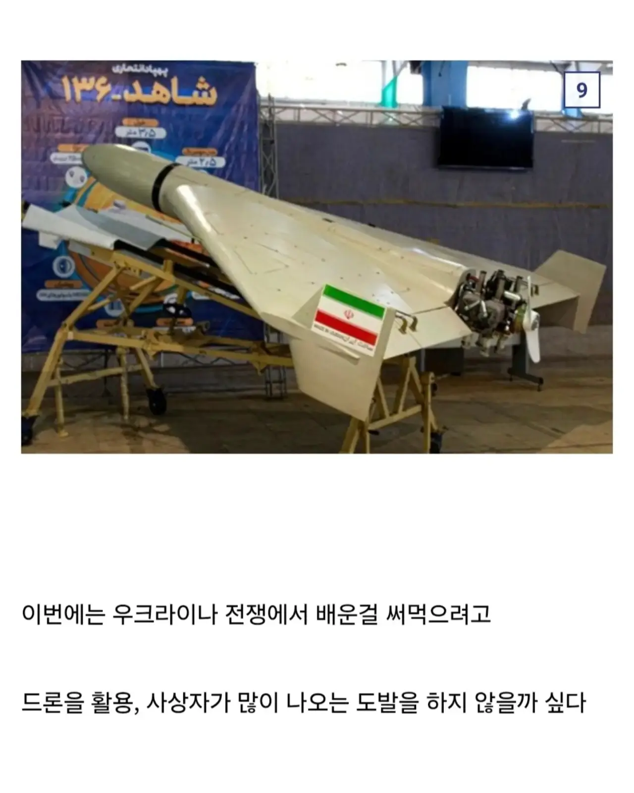
드론으로 도발할꺼라고 존나 걱정을 하신다..
근데
북한의 모든 도발 시점과 정권교체 시점을 그래프로 나열해보면 이렇다.
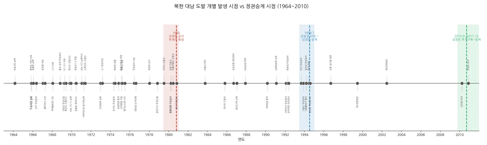
그냥 정권교체와 도발은 딱히 그렇게까지 연관성을 찾기 어렵고
'걍 저 돼지새끼들은 시도 때도 없이 도발 한다' 가 맞다
정권 교체 시점에 도발만 가져와서 데이터 착시 효과 노린 선동 노력조차 안하는
막 써재낀 가짜 선동글이
추천수 500개 넘어 포텐에 올라오고
또 그 댓글들은 무비판에 예상 가능한 베댓들

러우전쟁 데이터 쌓느라 바ㅃ븐가봐